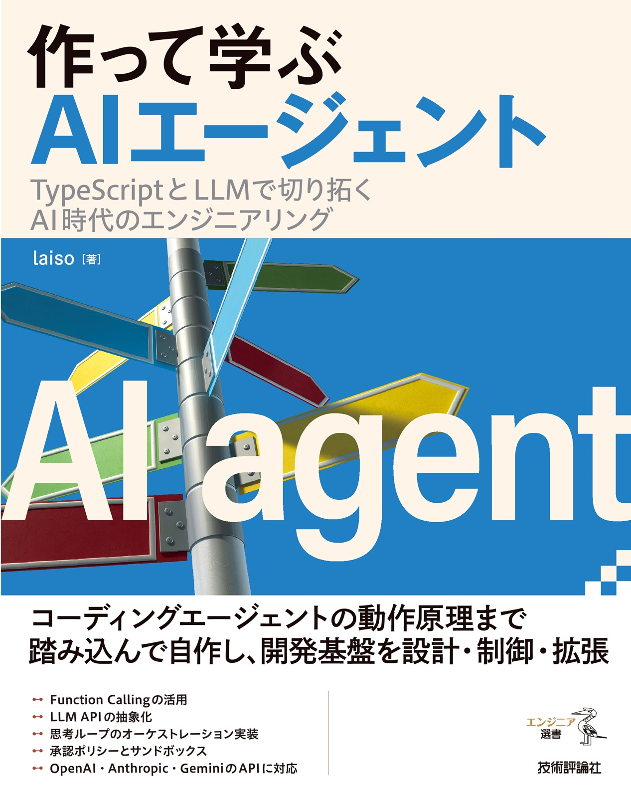

Support Site
作って学ぶ AIエージェント サポートサイト
このサイトは書籍「作って学ぶ AIエージェント ── TypeScriptとLLMで切り拓くAI時代のエンジニアリング」（laiso 著、技術評論社刊）のサポートサイトです
補足情報
- 7.4節：補足情報 1
- 7.7節：補足情報 2
- 7.2節：補足情報 3

このサイトは書籍「作って学ぶ AIエージェント ── TypeScriptとLLMで切り拓くAI時代のエンジニアリング」（laiso 著、技術評論社刊）のサポートサイトです